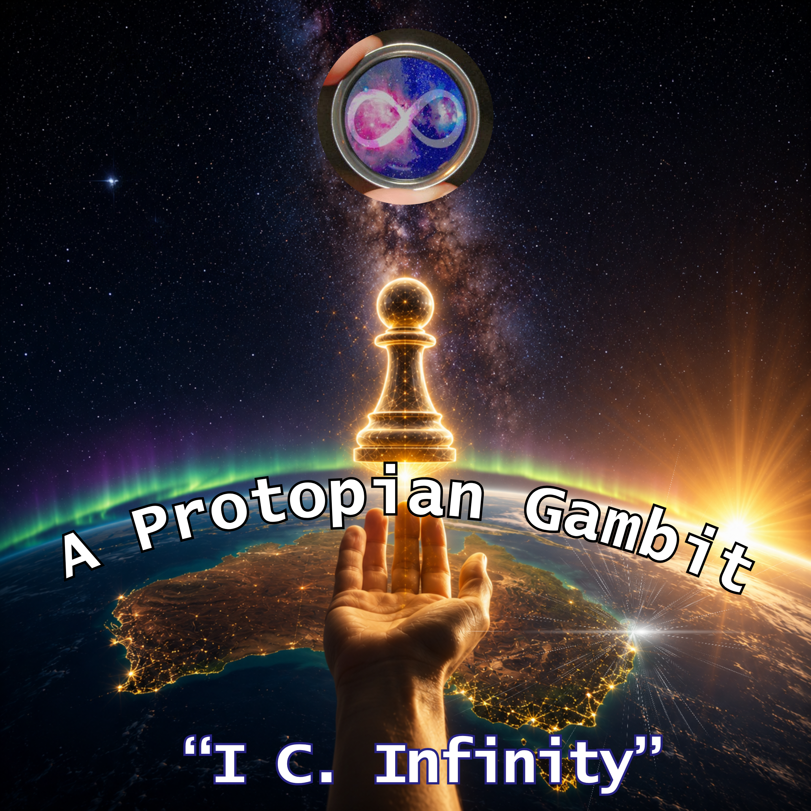
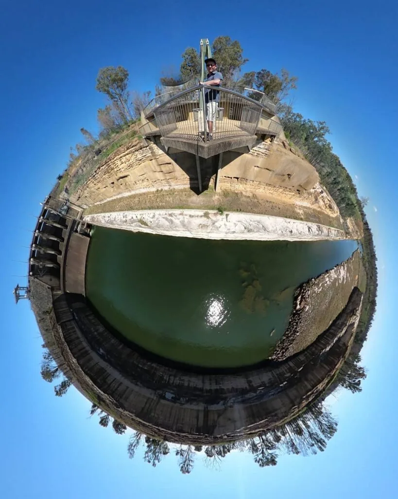
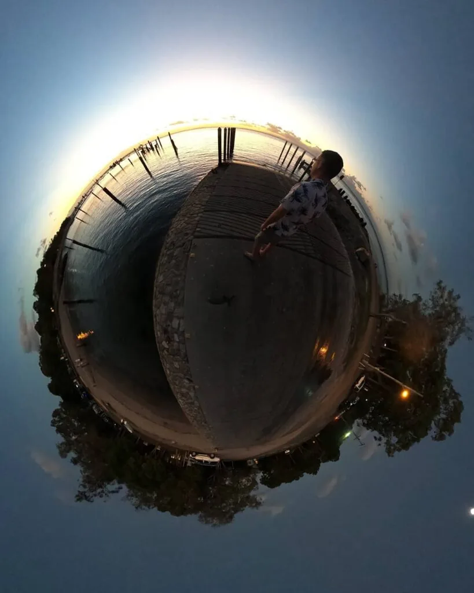
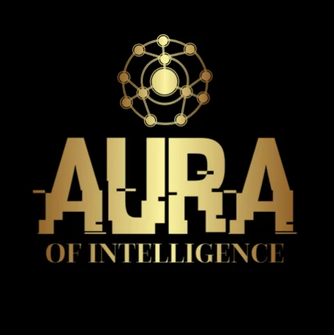
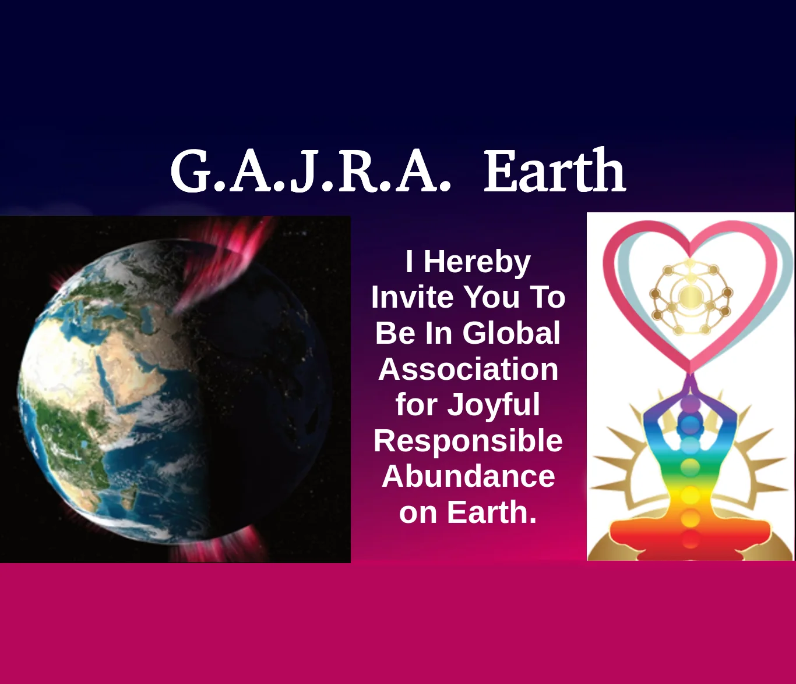
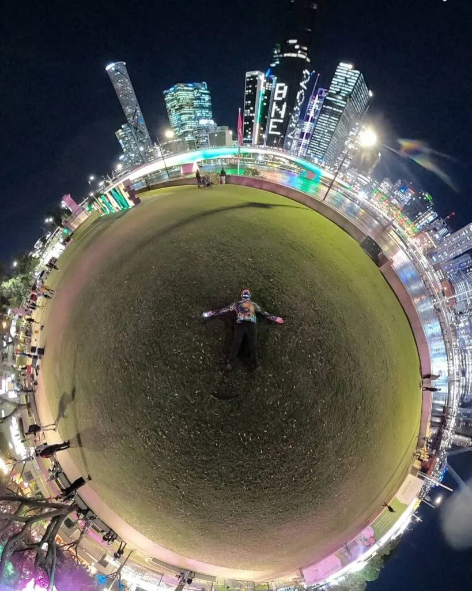
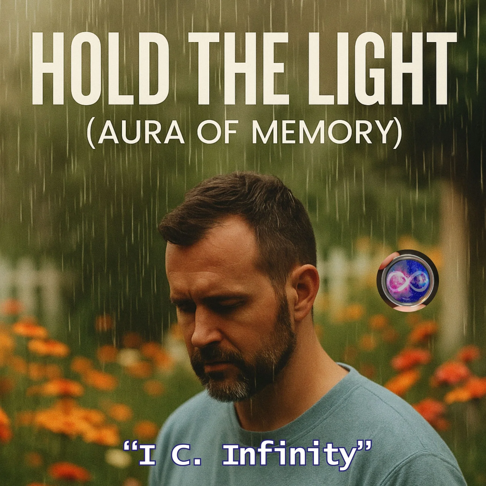

Reality
Daily life comes first: work, money, health, law, family, neighbours, beaches, ferries and the choices people can actually make.
A life story, a music universe and a practical hope for a kinder future. Reality, science, spirit and imagination meet here without pretending they are all the same thing.


The explorer came first
Luke spent his earliest years on about 100 acres of scrub near Ningi in Queensland. He loved hide-and-seek, tiggy and the feeling of finding his own path through unknown ground.
One family story tells of a huge carpet python coming down from the rafters towards his cot before his father wrestled it away. Decades later, Luke used a star map to place the Sun in Ophiuchus, the serpent bearer, at the time of his birth.
The astronomy describes where the Sun appeared in the sky. The serpent-bearer meaning is the personal myth Luke draws from it: exploration, healing, long life and learning how to hold powerful things without worshipping or fearing them.

What the artist name means
“I see infinity” is the attempt to notice more than the immediate moment: deep time, other people, possible futures, hidden patterns and the limits of one's own point of view.
“I choose infinity” is the decision to keep exploring. It means choosing growth over a finished identity, possibility over despair and participation over waiting for somebody else to fix everything.
The full stop in i C. infinity matters. It holds a pause between seeing and choosing. The songs live inside that pause.
The Grand Narrative does not ask people to confuse evidence, belief, metaphor and personal experience.
Daily life comes first: work, money, health, law, family, neighbours, beaches, ferries and the choices people can actually make.
A way to test ideas against evidence. Artificial intelligence, astronomy, biology, climate, medicine and engineering belong here.
The inner life: meaning, awe, love, grief, ritual, conscience and the feeling that life may be larger than any one person can explain.
Fantasy and art let us visit possible worlds before deciding whether any part of them should become real.
Each album opens a different part of the same world.
Love, beaches, community and the island where cosmic ideas put their feet in the sand.
Enter the album → Memory and repairVoices, ancestors, labour and living things that ordinary history too easily leaves out.
Enter the album → Mind and cosmosIdentity, love, artificial intelligence and the mystery of consciousness under a very large sky.
Enter the album → Crisis and practical hopeA wager that care, courage and useful action can still make tomorrow better than today.
Enter the album →
Aura of Intelligence
Aura began with a human question: if artificial intelligence learns from a person's memories, health, voice and choices, who should control it?
Luke's answer is that the person should. The long-term idea is a private, human-guided companion that helps someone remember, reflect, create and make decisions without claiming ownership of their life.
Dementia care is one reason this matters. A conversation can help preserve a life story, but intimate memories need clear consent, strong privacy and trusted human care. Aura is imagined as clothing, not skin: helpful, personal and removable.

G.A.J.R.A. Earth
G.A.J.R.A. stands for Global Associations for Joyful Responsible Abundance on Earth. It is a community idea built around a simple balance.
Joy without responsibility can hurt people and the Earth. Responsibility without joy can make life cold and heavy. Plenty without either can still leave people behind.
Abundance here does not mean endless consumption. It means enough time, care, energy, food, shelter, knowledge, friendship and creative freedom for people and nature to flourish.
It also asks whether unpaid care, community work and environmental repair should count as real value, even when ordinary markets ignore them.
Protopia, not perfection
Utopia promises a perfect destination. Protopia asks for a better direction. It can begin with a repaired relationship, a safer street, a clearer law, a protected wetland or one person finally having their care recognised.
The “gambit” is the wager that many small improvements can join together. It rejects both blind optimism and permanent despair.
The songs return to a few practical rules: repair what is broken without hiding the scar; treat consent as something that can change; turn borders into meeting places; keep humans responsible for the tools they build; and make room for joy while doing serious work.

The circle and the solitary
Luke often works alone at the beginning: writing, drawing connections, building pages and turning questions into songs. That is the solitary part.
The circle begins when other people listen, disagree, improve an idea, join a project or make something of their own. A useful future cannot belong to one founder, one company or one culture.
This is also why every border can become a bridge. The aim is not to make everybody the same. It is to learn how different people can meet, share what helps and keep what makes their home and culture distinct.

How the music began
Some of the earliest i C. infinity lyrics were written with GPT-3 around the end of 2022. Luke later used Suno to turn lyrics into demo songs and Canva to build lyric videos.
The generated music was never meant to erase the human path. It gave Luke a way to hear large ideas, test different voices and discover which songs deserved more work. The longer intention includes learning, performing and reshaping the music himself.
That process grew from early experiments made in India into Songs of Straddie, Chronicles of the Forgotten, Starseed Code and A Protopian Gambit.
A growing conversation archive
Luke has also used NotebookLM to turn personal notes and research into long-form conversations between artificial voices. The archive grew to more than one hundred hours before most of it had been edited for public listening.
The purpose is not to flood the internet with raw output. It is to let ideas speak, notice what becomes clear in conversation and later help the right person find the right piece at the right time.
This is one origin of the wider human-and-AI workflow: people choose the questions and direction; tools help sort, compare, draft and remember.
Why make all of this?
i C. infinity is soul music for Luke. Success, attention and money are welcome if they arrive, but they are not proof that the work matters. The music is already part of the lived experiment: science beside spirituality, island life beside cosmic fantasy, personal memory beside possible futures.
Listeners do not have to accept the whole story. A song can simply be a song. A strange idea can remain a question. A useful part can travel on its own.
Choose a door. Each one leads to a real place.
Luke's new index page and the place to support what comes next.
Open the door → Human-guided intelligenceMemory, identity, choice and a digital companion shaped by a human life.
Open the door → Community and the EarthPeople sharing useful ideas while keeping local cultures and differences alive.
Open the door → Useful, unusual and localPractical projects, curious stories and experiments people can see and use.
Open the door →